El presente documento sintetiza los hallazgos y las decisiones metodológicas más relevantes obtenidos durante la Práctica Integradora, cuyo propósito fue realizar un diagnóstico exploratorio y una limpieza sistemática del conjunto de datos de títulos de Netflix enriquecido con calificaciones de IMDb, Rotten Tomatoes y Metacritic, con el fin de producir un dataset limpio apto para análisis posteriores.
El reporte se organiza en dos bloques. El primero condensa las observaciones visuales de la Parte 1 (Sección 3 — Conclusiones exploratorias). El segundo documenta la Parte 2, donde se atacan tres problemas clásicos en ciencia de datos: valores faltantes (NA), valores atípicos (outliers) y duplicados. Cada bloque incluye las figuras generadas, las decisiones adoptadas y la justificación técnica correspondiente.
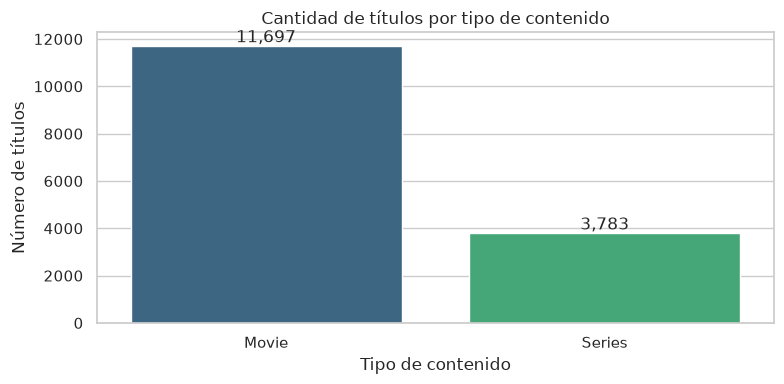
El catálogo está dominado por películas, que representan aproximadamente tres cuartas partes del total, mientras que las series conforman el resto. Esta asimetría es relevante para cualquier análisis comparativo posterior, ya que las distribuciones de puntajes, premios y duración pueden diferir sensiblemente entre ambos tipos.
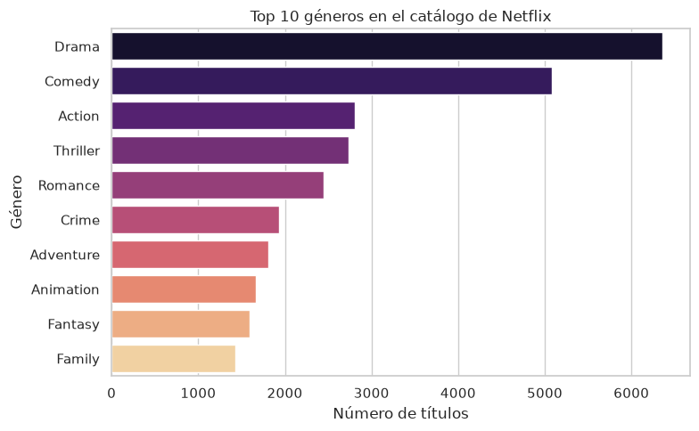
Los géneros predominantes son Drama, Comedia y Acción y Aventura. La concentración de títulos en unos pocos géneros sugiere que las recomendaciones basadas en contenido podrían colapsar a estas pocas categorías, y que los géneros minoritarios podrían requerir técnicas de reponderación.
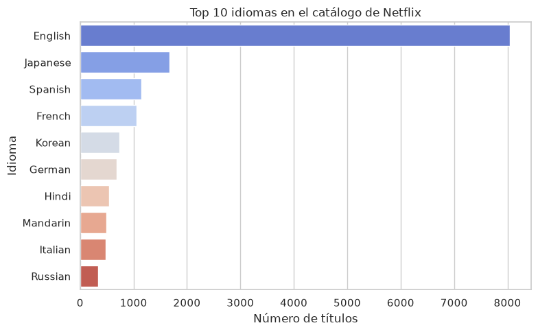
El inglés domina de forma contundente, seguido muy por debajo por español, japonés y francés. Esta concentración es esperable para el catálogo de Netflix, pero confirma que cualquier modelo predictivo tenderá a estar sesgado hacia producciones anglófonas si no se aplica una reponderación por idioma.
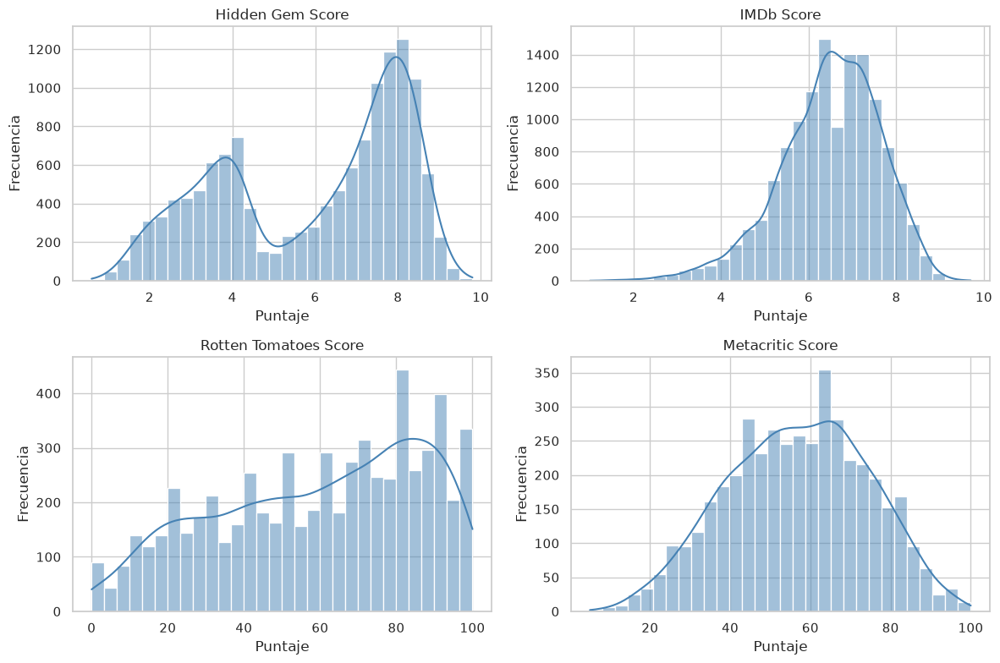
Las cuatro fuentes de calificación presentan distribuciones marcadamente distintas: IMDb Score y Hidden Gem Score tienen forma campaniforme sesgada hacia valores altos (títulos bien evaluados). Rotten Tomatoes Score muestra una distribución aproximadamente uniforme entre 0 y 100. Metacritic Score es la más dispersa y con mayor presencia de valores bajos, lo que sugiere una escala más estricta por parte de esa publicación.
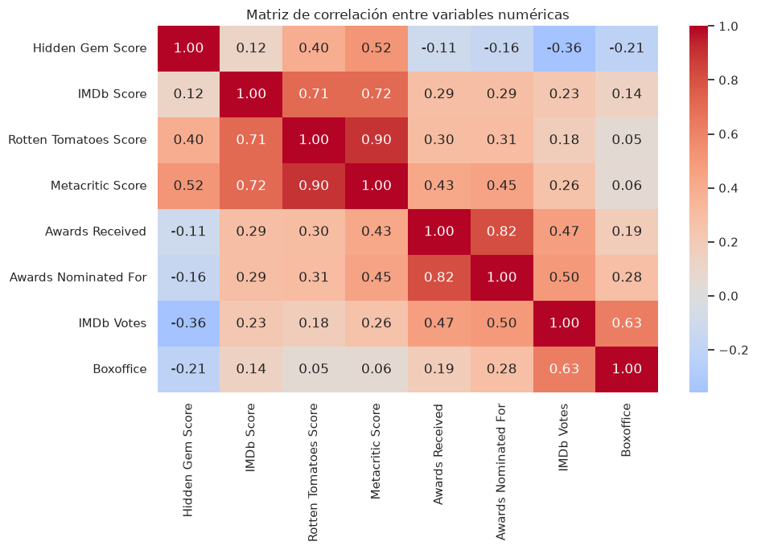
Se observan correlaciones positivas moderadas entre IMDb Score y Hidden Gem Score, y entre Rotten Tomatoes y Metacritic (pares lógicos de críticos). En contraste, IMDb Votes y Boxoffice muestran correlación positiva con los premios recibidos, lo que valida la hipótesis de que blockbusters y títulos premiados concentran gran atención del público.
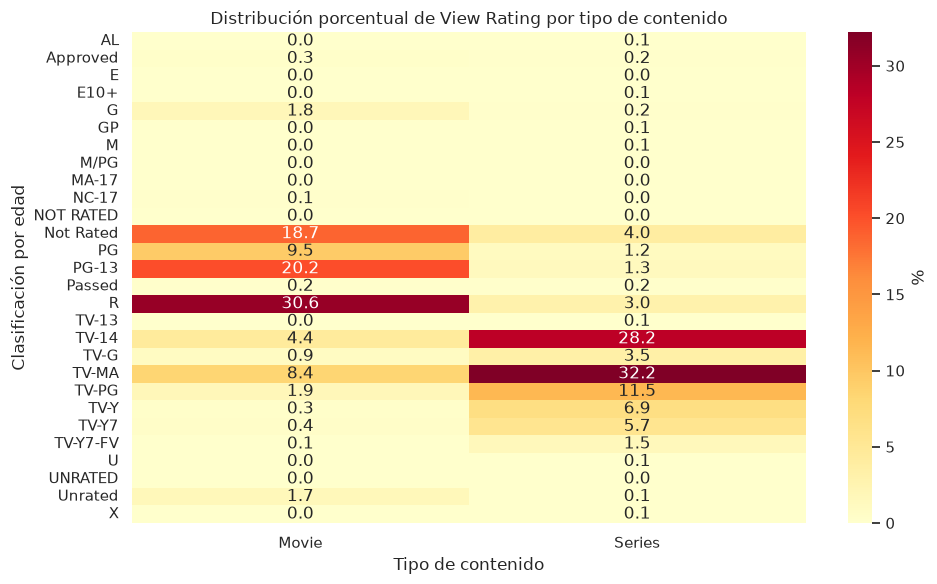
La categoría R concentra la mayor proporción de títulos para ambos tipos, pero las series tienen una mayor presencia relativa en clasificaciones TV-14 y TV-MA, mientras que las películas dominan en R y PG-13. Esta diferencia es consistente con los formatos narrativos de cada tipo.
En esta segunda parte se abordaron tres problemas que afectan la calidad del dataset: valores faltantes (NA), valores atípicos (outliers) y duplicados. Para cada uno se aplicó una estrategia diferenciada, basada en el porcentaje de faltantes, la naturaleza de la variable y el significado del dominio.
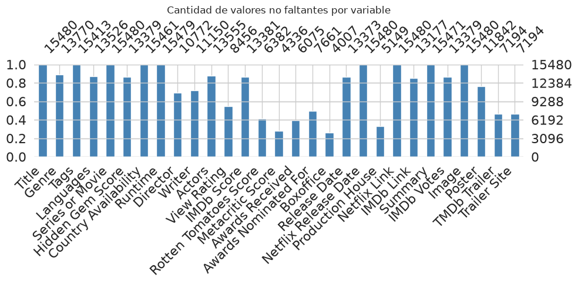
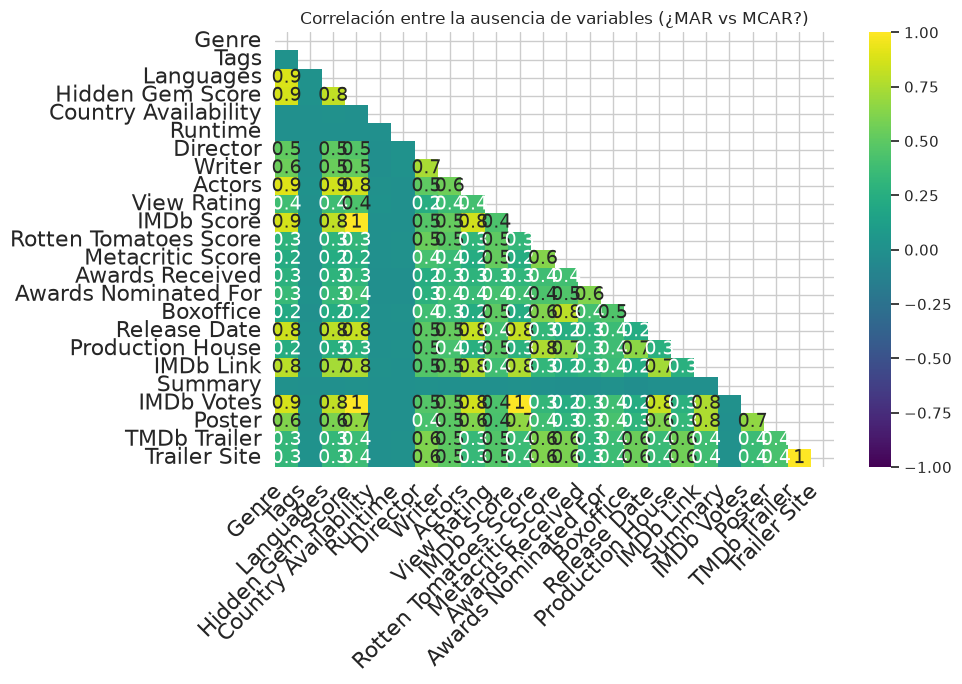
El heatmap de missingno revela que Boxoffice y Awards Received / Awards Nominated For tienden a estar faltantes juntos, lo que sugiere un patrón MAR (Missing At Random): cuando no hay información de premios tampoco se reporta recaudación, probablemente porque el título no fue un estreno cinematográfico masivo.
Se aplicó una estrategia de imputación graduada por rangos:
Las variables candidatas a imputación son Hidden Gem Score
(~13.5% NA), IMDb Score (~13.5% NA) y IMDb
Votes (~13.5% NA), todas con menos del 20% de faltantes. Se
construyó un vector de features con las variables numéricas más
correlacionadas con los puntajes y se aplicó KNNImputer(n_neighbors=5).
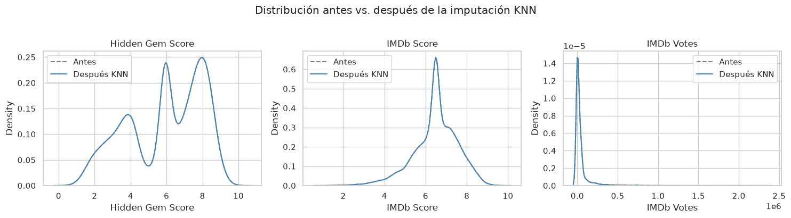
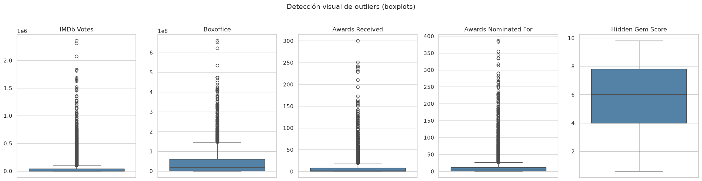
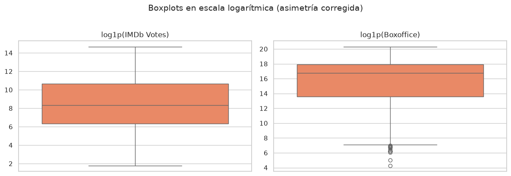
En lugar de aplicar una única estrategia global, se tomó una decisión mixta según la naturaleza de cada variable:
| Variable | Decisión | Justificación |
|---|---|---|
| IMDb Votes | Transformación log1p |
Alta asimetría a la derecha. El log comprime la cola larga sin perder información. |
| Boxoffice | Transformación log1p |
Idéntico comportamiento a IMDb Votes; la escala log es la representación estándar para ingresos. |
| Awards Received | Imputación con mediana | Los outliers son títulos multi-premiados; eliminarlos perdería información valiosa del dominio. |
| Awards Nominated For | Imputación con mediana | Mismo razonamiento: no se eliminan, se sustituyen por un valor neutro. |
| Hidden Gem Score | Winsorización P1–P99 | Variable acotada en [0, 10]; la winsorización recorta valores extremos manteniendo la muestra completa. |
Las transformaciones logarítmicas se almacenaron en columnas nuevas
(IMDb Votes_log y Boxoffice_log) para no perder
los valores originales. No se eliminó ninguna fila del dataset.
Se evaluaron cuatro combinaciones de columnas relevantes:
| Combinación | Filas marcadas |
|---|---|
| Title + Director + Release Date | 298 |
| Title + Director + Release Date + Series or Movie | 298 |
| Title + Netflix Release Date | menor |
| Title + IMDb Link | 0 |
La combinación Title + Director + Release Date identificó 298 filas con la misma tríada, lo que sugiere títulos re-listados o registros duplicados con pequeñas variaciones en campos secundarios.
Se eliminaron los duplicados parciales conservando la primera ocurrencia
(keep='first'), con lo que el dataset pasó de
15,477 a 15,471 filas. No hubo duplicados exactos de fila
completa, lo que confirma que las duplicaciones se debían a inconsistencias
en campos secundarios.
Netflix Link es
íntegro, pero la duplicación parcial por tríada Title + Director +
Release Date (298 filas) justificó una depuración. Tras la limpieza,
el dataset final contiene 15,471 filas y 22 columnas,
almacenado en Netflix_clean.csv.